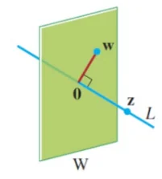
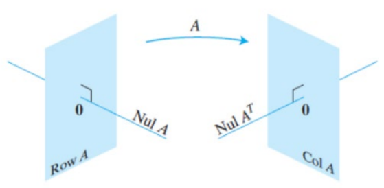
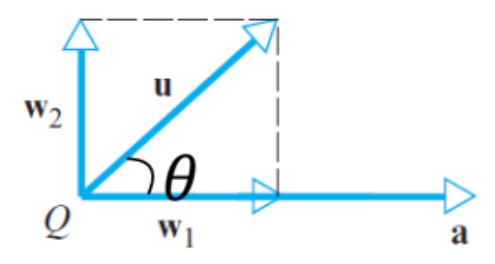

Recall that two nonzero vectors
,
are orthogonal if
The zero vector is orthogonal to every vector in
.
,
where
.
8.1 Orthogonal Complements
If a vector
is orthogonal to every vector in a subspace
in
,
then
is orthogonal to
.
The set of all vectors
that are orthogonal to
is the orthogonal complement of
,
denoted by
.
Vector
is orthogonal to every vector in a set that spans
.
Only need to check if
is perpendicular to the vectors that span
(its basis vectors).
is a subspace of
.
contains the zero vector and is closed under addition and scalar
multiplication.

and

The four fundamental subspaces of any matrix
An
matrix
acts as a linear transformation mapping vectors from a domain
()
to a codomain
().
We have the following relationships:
Proof.
:
If a vector
is in
,
then
.
When you compute
,
you are taking the dot product of each row of
with the vector
.
Because the result is a zero vector,
must be orthogonal to every single row of
.
Because the rows of
span
,
is orthogonal to the entire row space.
:
If we start with a vector
that is orthogonal to
,
it must inherently be orthogonal to each individual row of
.
Therefore, the dot product of each row with
is
,
meaning
.
This confirms
is in
.
Substituting
into the first rule gives:
.
8.2 Orthogonal Projections

Decomposition of
Sometimes, we need to break a vector
into two orthogonal vectors relative to reference vector
.
8.2.0.1 Projection Theorem
We can express
exactly one way as
where
is a scalar multiple of
,
and
is a vector orthogonal to
.
is the orthogonal projection of
onto
.
is vector component of
orthogonal to
(or the residual).
The norm of the projection is
8.2.0.2 Pythagoras’ Theorem in
If
and
are orthogonal vectors, then
Proof.
8.3 Orthogonal Sets &
Bases
A set of vectors
in
is said to be an orthogonal set if each pair of distinct vectors from
the set is orthogonal. Mathematically, this means their dot product is
zero:
8.3.0.1 Theorem
If
is an orthogonal set of nonzero vectors in
,
then
is linearly independent and hence is an orthogonal basis for the
subspace spanned by
.
Note that
.
If
,
then
is an orthogonal basis for the entire space
.
Note also that not all bases are orthogonal. Proof. Assume there is a linear combination that equals the
zero vector:
If we take the dot product of both sides with
:
Because
is an orthogonal set, all dot products where
are zero. This leaves:
Since
is a nonzero vector,
is not zero. Therefore,
must be
.
By repeating this for each vector, all weights
must be zero, proving the set is linearly independent.
8.3.1 Computing Coordinates
Relative to an Orthogonal Basis
8.3.1.1 Theorem
Let
be an orthogonal basis for a subspace
of
.
For each
in
,
the weights in the linear combination
are given by:
The proof for this is similar to the above theorem.
8.3.2 Orthogonal Projections onto
Subspaces
8.3.2.1 Theorem
Let
be a subspace of
.
Then each
in
can be written uniquely in the form:
where
is in
and
is in
(orthogonal to
).
If
is any orthogonal basis of
,
then the orthogonal projection of
onto
(denoted as
or
)
is calculated as:
and the residual is
. Example: Let
be an orthogonal basis for
and let
.
Consider the subspace
.
Write
as the sum of a vector
in
and a vector
in
.
Naturally, group the terms based on the orthogonal basis:
is clearly in
(which is
).
To prove
is in
,
we must show it is orthogonal to the basis of
.
Let’s check against
:
A similar calculation shows
.
Thus,
is in
.
8.4 Orthonormal Sets &
Orthogonal Matrices
8.4.1 Orthonormal sets
A set of vectors
is an orthonormal set if it is an orthogonal set of unit vectors.
If an orthonormal set spans a subspace
,
it is an orthonormal basis for
.
(It is automatically linearly independent.)
The simplest example: The standard basis in
(e.g.,
)
is an orthonormal basis. Example: Show that
is an orthonormal basis of
,
where:
,
,
.
Check orthogonality:
,
and so on.
Check unit length:
and so on.
Hence it is an orthonormal set.
8.4.2 Matrices with Orthonormal
Columns
8.4.2.1 Theorem
An
matrix
has orthonormal columns if and only if
. Proof. When you multiply
,
the entry in row
and column
is the dot product of column
and column
.
If
(the diagonal entries),
(because they are unit vectors).
If
(the off-diagonal entries),
(because they are orthogonal).
If the original vectors were orthonormal, it simplifies to:
8.4.2.2 Theorem
Let
be an
matrix with orthonormal columns, and let
and
be vectors in
.
Transforming vectors via
preserves their lengths and their relationships to one another:
Preserves Length:
Preserves Dot Product:
Preserves Orthogonality:
if and only if
Proof. Property 2:
.
Property 1 follows as such:
. Example: Let
and
.
Verify that
.
Compare norms:
8.4.3 Orthogonal matrices
If a matrix has orthonormal columns AND is square, it is an
orthogonal matrix.
A orthogonal matrix
is a real square matrix, whose columns and rows are orthonormal
vectors.
.
.
Reason:
is square, so its left inverse is also its right inverse, forcing
.
Just as
computes the dot products of the columns,
computes the dot products of the rows:
Geometrically, if
is
orthogonal matrix, there are
orthogonal columns in a
-D
space, hence forming a basis for the entire space.
A classic
orthogonal matrix
is
Column 1: Imagine taking the standard
-axis
and rotating counter-clockwise
.
Length is still 1.
Column 2: Same thing for the
-axis.
If matrix
is
matrix, and
,
it is NOT an orthogonal matrix.
is still true, yielding an
identity matrix.
But
yields an
matrix
.
Instead,
creates an
projection matrix of rank
.
This matrix
can be used to project any given vector
onto the column space of
(let’s call it
)
using the formula:
.
Geometrically, for example if
,
,
the two vectors span a flat 2D plane cutting through that 3D space.
8.5 Orthogonal Decomposition
Generalising an earlier theorem in 1-D space to higher-dimensional
space,
8.5.0.1 Theorem
Let
be a subspace of
.
Then each
in
can be written uniquely in the form:
is entirely inside the subspace
,
it is the orthogonal projection of
onto
,
written as
.
is in
(orthogonal to every vector in
),
it is calculated as
.
Formula: If
is any orthogonal basis of
,
then:
Proof. We have the residual
and
because
is orthogonal to the subspace. So we have
8.5.1 The Best Approximation
Theorem
8.5.1.1 Theorem
Let
be a subspace of
,
let
be any vector in
,
and let
be the orthogonal projection of
onto
.
Then
is the closest point in
to
,
meaning:
for all other vectors
in
distinct from
.
Note: If
is already in
,
then
(the distance is zero). Proof. Rewrite
as:
Since
and
are orthogonal, by Pythagoras Theorem:
Since
is not the same point as
,
then
,
and
8.5.2 Projections with Orthonormal
Bases
If
is an orthonormal basis for
,
then the formula for the projection onto
simplifies to:
because the denominators
()
all become 1.
If
is the matrix containing these orthonormal columns, the projection can
be calculated via the projection matrix
:
Proof.
Building the
result:
.
8.6 QR decomposition
If
is an
matrix with linearly indpendent columns, then
can be factorised as
is an
matrix (economy QR) whose columns form an orthonormal basis for the
column space of
(Col
).
is an
upper triangular invertible matrix with positive entries on its
diagonal.
Note that
,
otherwise the columns of
are linearly dependent, forming a contradiction.
Properties of
:
:
It means the column space of
is identical to the column space of
.
:
Property of matrix with orthonormal columns.
:
might not be square. This projects any vector onto the column space of
.
Properties of
:
Square and Upper Triangular: all entries below of the main
diagonal are zero.
Invertibility: If
has linearly independent columns,
is invertible. If
has linearly dependent columns,
is NOT invertible (it will have zeros on its diagonal).
Sketch of why we use QR decomposition: Imagine trying to solve the
system
for a very large matrix
.
This is easier to solve as
R is an upper triangular matrix, so we can use back-substitution.
8.6.1 Gram-Schmidt (GS)
Process
This algorithm finds the
matrix. It takes a set of independent vectors (columns of
)
and transforms them into mutually orthogonal vectors.
If you start with a set of vectors
,
the GS process outputs an orthogonal set
.
The subspace spanned by the new orthogonal vectors is exactly identical
to the subspace spanned by the original vectors:
.
8.6.1.1 The algorithm
Given a basis
for a nonzero subspace, construct the orthogonal basis iteratively:
Anchor the first vector:
.
For the second vector, subtract its projection onto the first:
.
For the third vector, subtract its projections onto all previous
vectors:
.
Repeat this pattern up to
vectors.
Proof. The Orthogonal Decomposition Theorem: guarantees that
any vector
can be split into a component that lies within a previously established
subspace
(the projection) and a component perfectly orthogonal to
(the residual).
,
the algorithm mathematically strips away the interior projection,
leaving only the orthogonal residual
.
Furthermore, because the original vectors are strictly linearly
independent,
cannot be entirely contained within
;
thus, the residual
will never collapse into the zero vector
(),
ensuring the newly formed orthogonal basis remains intact and spans the
exact same space.
Orthonormalisation: The Gram-Schmidt algorithm
natively produces an orthogonal set. To achieve the orthonormal set
required for matrix
,
every vector must be normalized so its length equals
.
This is done by dividing the vector by its norm:
.
8.6.1.2 Finding
is found using the relationship
.
8.6.1.3 Full QR decomposition
For
matrix
where
,
the standard method only yields the
Economy QR. To obtain a Full QR factorization,
must be expanded into a perfectly square
matrix.
To achieve this, append a dummy matrix
(such as the Identity matrix
)
to
so that the combined matrix
reaches a full rank of
.
Run the Gram-Schmidt process on this massive combined matrix. The
original columns form the block
,
while the extra manufactured columns form
,
extending the set to form a complete orthonormal basis for
.
8.6.1.4 Why append the identity
matrix?
If matrix
is
(where
),
its columns only span an
-dimensional
slice of the full
-dimensional
space
().
To build a square
matrix for
,
we must "discover" the missing
perpendicular directions. Because the columns of the
identity matrix inherently span the entirety of
,
appending them onto
guarantees that every possible dimension is represented. When we run G-S
across this combined matrix, the algorithm naturally filters out the
redundant dimensions (which become
and are discarded) and orthogonalizes the remaining distinct directions,
perfectly completing the basis.
8.6.1.5 The 4 cases of
could be square or tall, and the columns could be indepedent or
dependent. Square matrices,
:
the economy and full decompositions are exactly the same.
is always a perfect square orthogonal matrix, meaning
.
The only thing that changes is the invertibility of
.
Case 1: Square matrix with independent columns. Factoring
yields a square
where
,
and a square
that is perfectly invertible.
Case 2: Square matrix with a dependent column. The algorithm can
still decompose
,
and
will still be a perfect orthogonal matrix
().
However,
will have a row of zeros, making it NOT invertible. Example: Let
.
Notice that the first two rows are identical, meaning the matrix only
has a rank of 2. We will get
orthogonal matrix
,
and
matrix
evaluates with zeros across its entire bottom row so
cannot be inverted.
Tall matrices,
:
the difference between Full and Economy QR becomes prominent.
A tall matrix
can be written in block matrix form for a Full QR:
.
Tall matrix with independent columns.
Full QR: Yields a square
matrix for
,
and a tall
matrix for
padded with zeros at the bottom.
Economy QR: Yields a tall
matrix for
,
and a square
matrix for
.
Because
is rectangular, it is not a true orthogonal matrix. While
(an
identity matrix), the reverse multiplication
yields a square
projection matrix.
Tall matrix with a dependent column. Regardless of using Full or
Economy mode, the presence of dependent columns causes entire rows in
to become zero. The number of non-zero rows in
will equal the number of truly independent columns in
.
8.6.1.6 Example - Economy QR
Let
be a
matrix with linearly independent columns:
Anchor the first vector:
Orthogonalize the second vector
():
Orthogonalize the third vector
():
We divide each vector by its length
(,
,
and
):
:
8.6.1.7 Full QR
Using the same
as above, we append the
Identity matrix
()
to
to guarantee we have raw vectors pointing in every possible dimension:
Let’s process the first column of the Identity matrix
():
Normalising, we get,
We now possess 4 orthogonal vectors
().
ince a 4D space can only hold a maximum of 4 mutually perpendicular
directions, if we continued the algorithm on the remaining columns of
the identity matrix, they would all perfectly cancel out into the zero
vector
()
and be discarded.
To construct
,
we take
and simply pad the bottom with a row of zeros until it matches the
dimensions of our original
matrix
.
8.6.1.8 What if
had linearly dependent columns?
Let
be a
matrix where the second column is exactly twice the first column
(linearly dependent).
Process the first vector
():
Because
,
we discard it, do not increment our rank counter, and move immediately
to the next column.
Process the third vector
():
Because we discarded a dependent column, our
matrix only yielded
valid orthonormal vectors. Thus,
is a
matrix.
To find
,
we calculate
:
Observe the second row of
.
Because the second column of
was dependent on the first, it did not generate a new orthogonal vector
to drop down to. The zeroes stretch horizontally, creating the
"staircase" shape that means
is not invertible.